1.浏览管理系统左侧工具栏，点击“上课指南”，下拉菜单中的“工具下载”。将Aretalk Teacher系统下载到桌面。
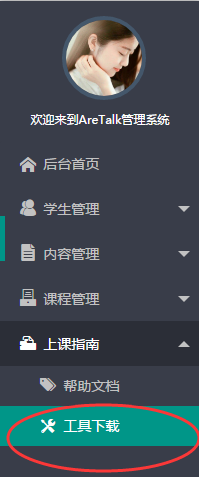
2. 填写注册时的账户和密码，点击“登录”。
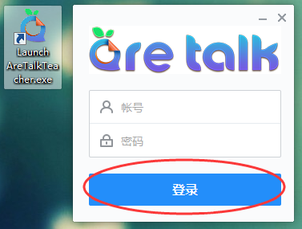
3. 进入系统页面，点击“开始上课”。
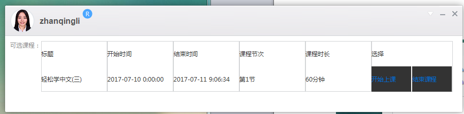
4. 点击页面底部工具栏，点击“文档库”。
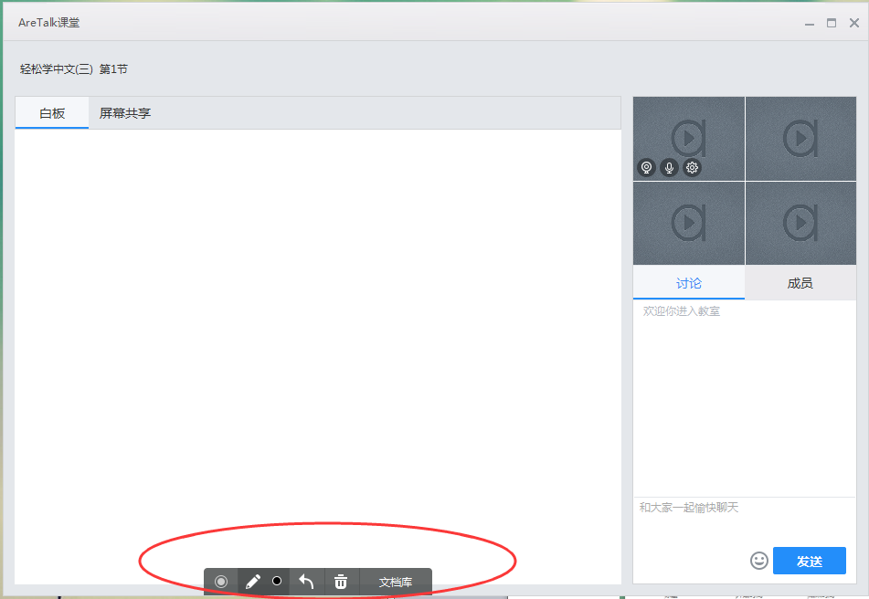
5. 点击“上传课件（PDF/PPF）”,将教师已制作的课件上传。
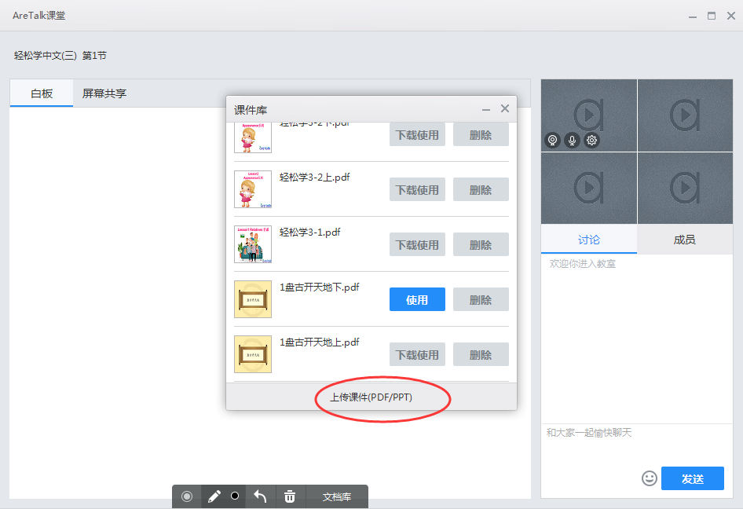
6. 按照预期的课程安排选择已上传的课件，点击“下载使用”，等待下载，下载完毕后，点击“使用”。
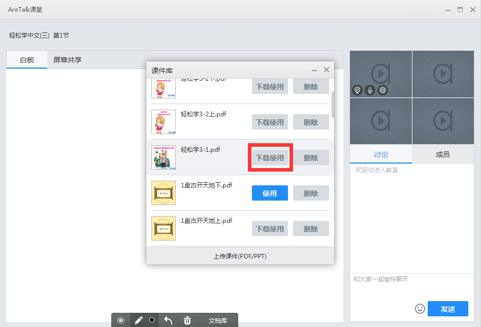
7. 课程进程中，点击翻页标进行页面切换。
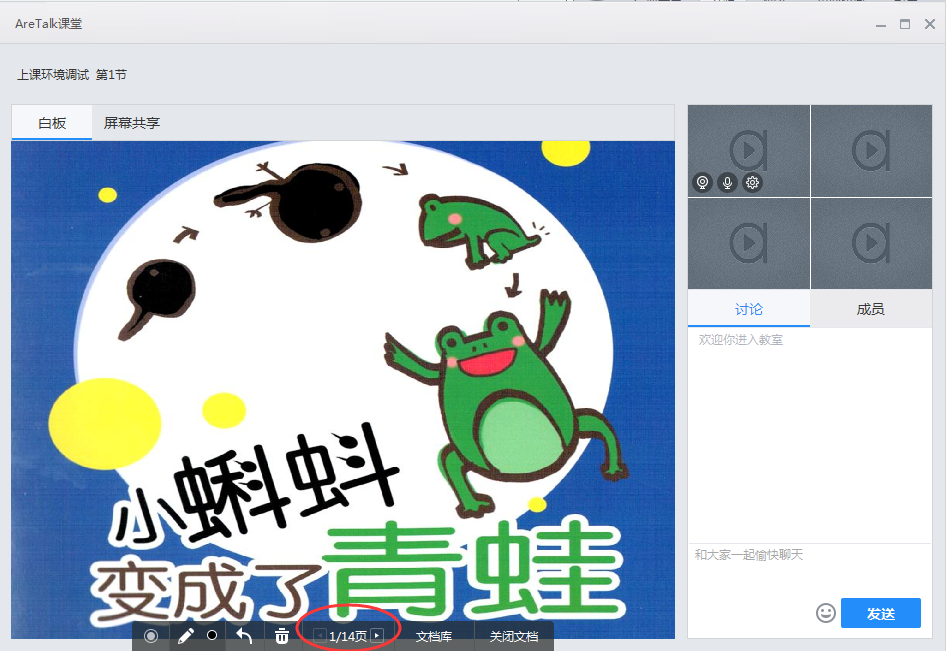
8. 课程结束后，点击“关闭文档”。
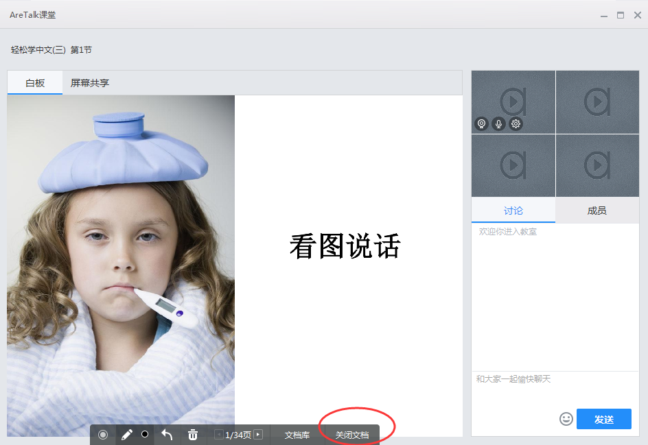
9. 在右侧讨论区，可以在对话框中输入文字，点击“发送”，与学生进行文字交流。
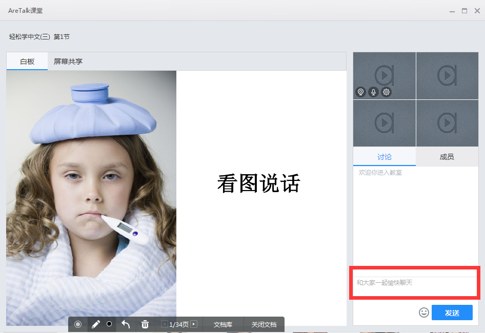
10.在课程开始前，可点击“成员”列表确认学生实到人数。
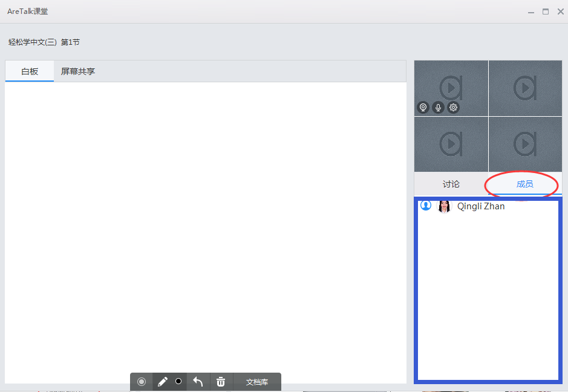
11. 点击右侧“设置”，对语音、视频等设备进行调试。
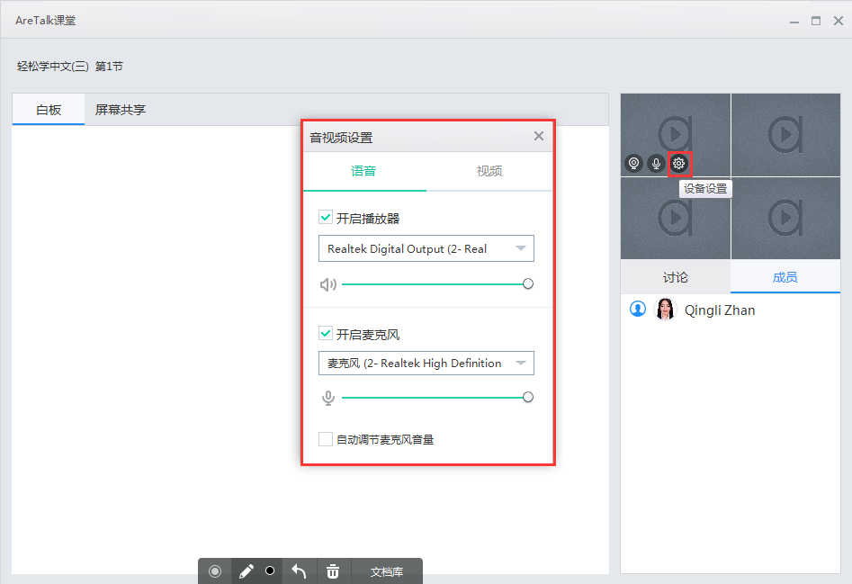
12. 在授课期间，教师可使用白板与学生进行互动，或强调重点区域，可点击选择画笔颜色。
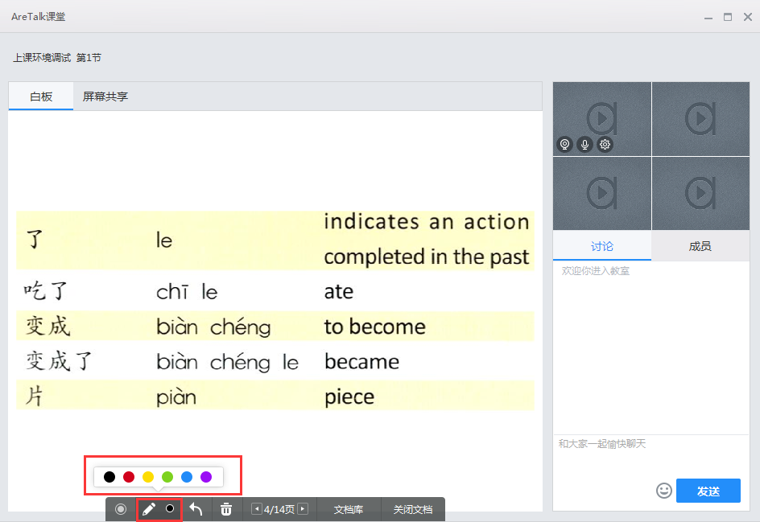
13.点击“撤销”或者“垃圾桶”，清除画笔痕迹。
14.在课件演示过程中，可使用激光笔。确保学生将注意力集中在本课中。
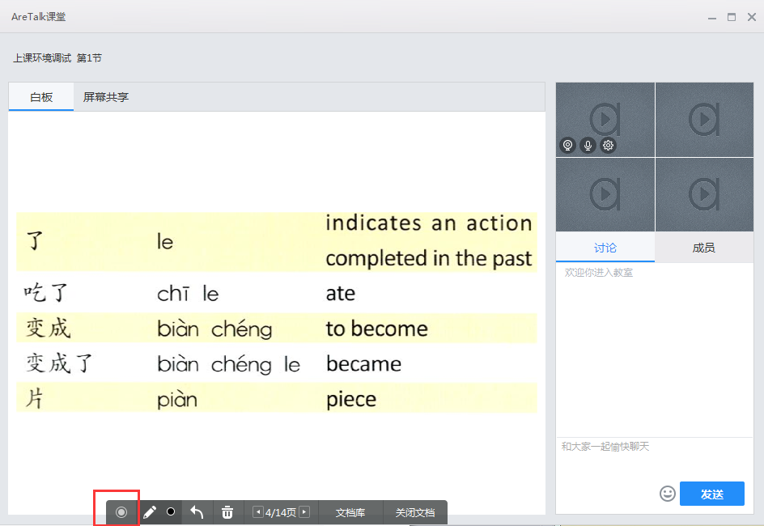